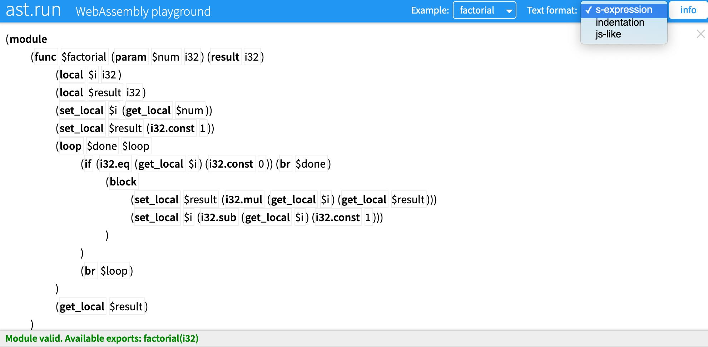
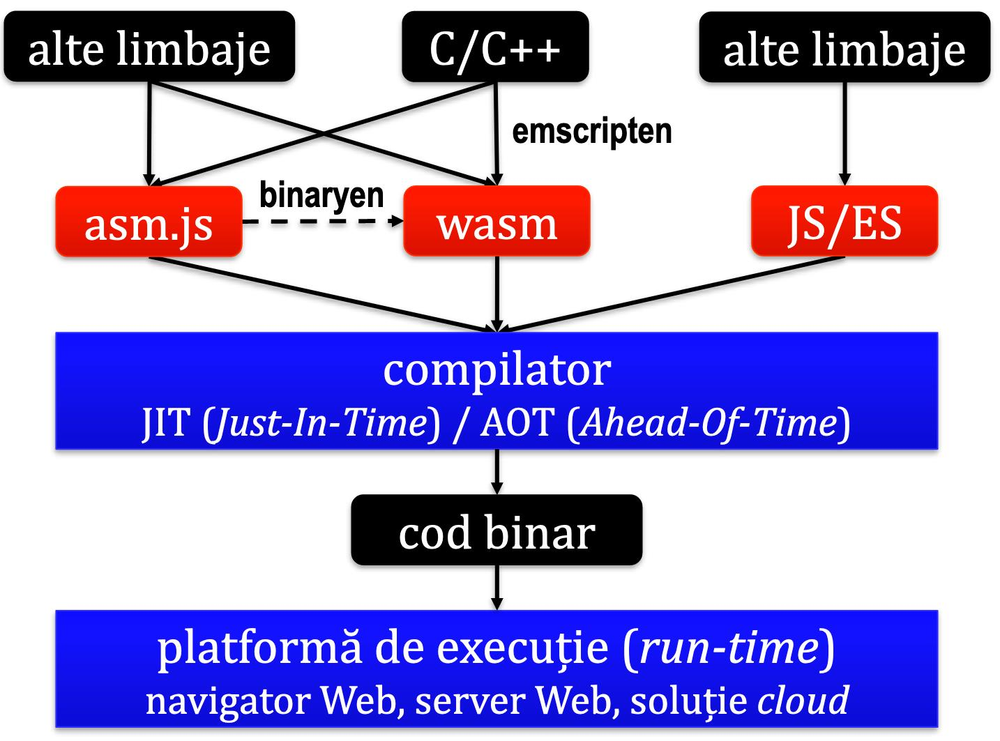
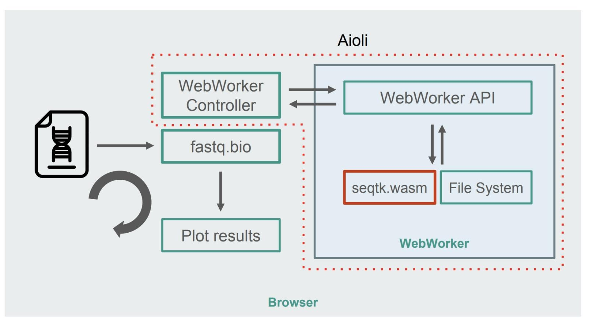
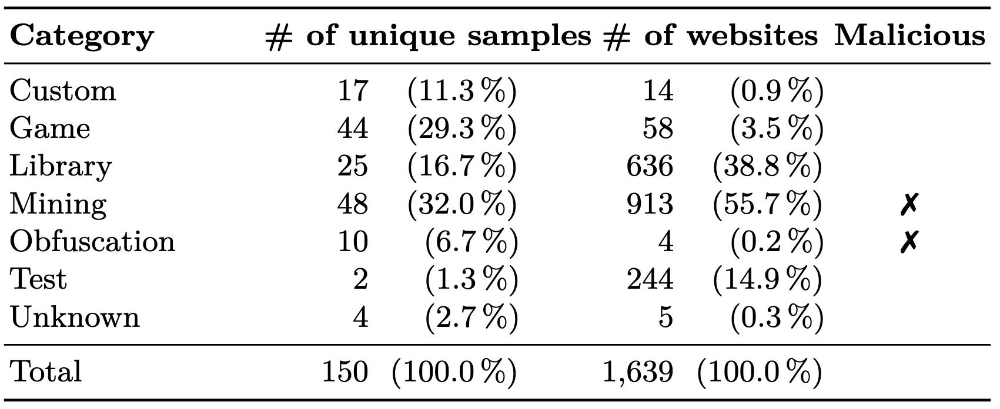

Data publicării: 02.09.2019
Autor articol: Sabin Buraga
Punerea problemei
Unul dintre aspectele efervescente ale tehnologiilor Web actuale îl reprezintă noul limbaj venit în peisajul mereu schimbător al programării la nivel de client și nu numai – WebAssembly. Articolul va face o trecere în revistă a celor mai importante caracteristici ale limbajului, enumerând și câteva exemple reale.
Unul dintre aspectele uneori ignorate este cel care vizează asigurarea securității. Sunt deja relativ numeroase incidente de securitate cauzate, direct ori indirect, de utilizarea modulelor WebAssembly în scopuri malițioase. O parte dintre acestea vor fi discutate în a doua parte a acestui studiu, elemente ale unei viitoare prelegeri ce va fi susținută de autor la disciplina opțională “Dezvoltarea aplicațiilor Web cu JavaScript” (“Full-Stack Web Application Development”) din planul de învățământ al Facultății de Informatică a Universității “Alexandru Ioan Cuza” din Iași (Buraga, 2019).
WebAssembly
În multe cazuri, aplicațiile sofisticate implementate în ECMAScript (JavaScript) – lingua franca a universului browser-erelor Web – prezintă unele probleme de performanță, codul JavaScript nefiind suficient de rapid.
Astfel, a fost propus WebAssembly, un limbaj de programare proiectat pentru execuție eficientă la nivel de (navigator) Web, axat pe realizarea de calcule numerice complexe. WebAssembly are drept inspirație și predecesor asm.js, o inițiativă Mozilla (2012–2014) de a folosi un subset al limbajului JavaScript ca limbaj de nivel scăzut
Caracteristici principale
Programele WebAssembly – organizate în module ce pot fi încărcate (a)sincron – trebuie să fie rulate în manieră sigură și trebuie să se bucure de portabilitate, dar – totodată – să beneficieze de avantajele unui limbaj de nivel scăzut, apropiat de mașină.
WebAssembly (prescurtat “wasm”) include un set restrâns de tipuri de date (numere întregi și în virgulă mobilă stocate pe 32 sau 64 de biți) și de operații. Natura limbajului permite optimizări la momentul compilării, arhitectura conceptuală bazându-se pe aceea a unei mașini virtuale. Specificația formală a limbajului (Rossberg, 2019) este încă în lucru, dar toate navigatoarele Web moderne oferă suport nativ pentru WebAssembly.
Un instrument de testare și de studiere a codului produs – WebAssembly Playground – este disponibil online la adresa Web <http://ast.run/> (a se vedea captura-ecran de mai jos).

Etapele importante ale procesului de dezvoltare și exploatare în practică a modulelor WebAssembly sunt următoarele:
- Crearea unei aplicații în limbajul de programare preferat (C, C++, JavaScript,…).
- Generarea modulului wasm – via compilare/traducere; unul dintre compilatoarele populare este emscripten menit a converti programele C/C++ în WebAssembly, codul OpenGL fiind rescris în WebGL. Vechile programe asm.js pot fi “modernizate” via instrumentul binaryen.
- Publicare pe Web a modulelor wasm în vederea (re)utilizării.
- Încărcarea asincronă a modulelor wasm pe baza unui API disponibil (folosind obiectul WebAssembly ce poate fi manipulat cu JavaScript).
- Instanțierea fiecărui modul wasm.
- Apelarea funcționalităților furnizate.
Diagrama următoare oferă privirea de ansamblu a acestor etape.

De regulă, un modul wasm nu are acces direct la arborele DOM (Document Object Model) corespunzător documentului HTML, dar codul poate fi partajat de alte programe JS neinteractive – „lucrători” (Web workers) – și instanțiat de multiple ori.
De asemenea, mai recent există posibilitatea ca modulele wasm să fie executate la nivel de server, inclusiv „în nori” – această direcție se numește Serverless WebAssembly (Aboukhalil, 2019a).
Studii de caz
Ca utilizări concrete ale WebAssembly le menționăm pe următoarele:
- Recurgerea la WebAssembly pentru scanarea produselor în cadrul aplicațiilor mobile furnizate de eBay (Jha & Padmanabhan, 2019).
- Portarea în WebAssembly – cu ajutorul compilatorului emscripten – a motorului jocului Doom 3 creat de compania id Software în C++ (Cuvillier, 2019).
- Instrumentul Figma pentru proiectarea de prototipuri de interfețe-utilizator recurge la WebAssembly pentru a crește eficiența încărcării aplicației (Wallace, 2017).
- Creșterea de 20 de ori, grație WebAssembly, a vitezei de procesare a datelor științifice din domeniul bioinformaticii – modulul seqtk.wasm (portat din C) al aplicației fastq.bio (Aboukhalil, 2019b) a cărei arhitectură poate fi studiată în figura de mai jos.

- Funcții serverless Node.js – aliniate paradigmei FaaS (Functions As A Service) – încărcând module wasm exploatate pe IBM CloudFunctions ce recurge la platforma deschisă Apache OpenWhisk (Thomas, 2019).
- Funcții serverless WebAssembly generate cu Rust și executate pe platforma Cloudflare Workers.
Vulnerabilități
Din nefericire, rularea neautorizată de cod wasm poate conduce la probleme de securitate. Printre cele mai importante se numără:
- depășiri de memorie (buffer overflow) cauzând breșe de tip XSS (Cross-Site Scripting),
- execuție nepermisă a codului pe server (Server-Side Remote Code Execution),
- includere de malware (e.g., troieni Web).
Alte efecte și aspecte tehnice sunt discutate în raportul (Lonkar & Chandrayan, 2018).
La încheiere amintim o serie de incidente reale de securitate vizând WebAssembly.
Primul caz se referă la prezența neautorizată în browser-ul Web a unor programe axate asupra mineritului de monede virtuale (cryptocurrency mining) sau spionării activităților realizate de utilizatori. Astfel, în (Neumann & Toro, 2018) sunt descrise diverse maniere de atac, precum preluarea via cod JavaScript injectat a unui modul wasm malware (CryptoNight WASM).
Al doilea exemplu privește raportarea unei probleme de acces neautorizat la date (information disclosure) atunci când se compilează cod WebAssembly în cadrul WebKit. Conform CVE Vulnerability Data, această breșă cu severitate medie a afectat mai multe produse Apple precum browser-ul Safari versiune mai mică de 11.1.1, sistemele de operare iOS până la versiunea 11.4, tvOS cu versiune mai mică de 11.4, watchOS până la versiunea 4.3.1 – explicații sunt disponibile la http://www.cvedetails.com/cve/CVE-2018-4222/.
Un studiu recent (Musch et al., 2019) a considerat gradul de utilizare a WebAssembly în cadrul primelor 1 milion de situri Web raportate de serviciul Alexa. De asemenea, s-a realizat o categorisire a tipului de module wasm și a vulnerabilităților întâlnite. Preluarea datelor s-a efectuat via un robot (crawler) conceput în Node.js care a vizitat siturile vizate timp de 4 zile. S-au preluat 150 de eșantioane unice detectate pe un număr de 1639 de situri care includeau cod WebAssembly. Utilizările practice ale modulelor wasm sunt ilustrate în tabelul următor, două categorii având clar scopuri malițioase: minarea de monede virtuale (mining) și ascunderea de informații (obfuscation) – peste 50% din cazuri. De asemenea, se remarcă o prezență substanțială a codului WebAssembly în diverse biblioteci JavaScript – categoria Library reprezintă aproape 39% din totalul siturilor explorate.

Referințe bibliografice
- Aboukhalil, R., “Beyond The Browser: Getting Started With Serverless WebAssembly”, Smashing Magazine, 28 August 2019: http://www.smashingmagazine.com/2019/08/beyond-browser-serverless-webassembly/
- Aboukhalilich, R., “How We Used WebAssemblyTo Speed Up Our Web App By 20X (Case Study)”, Smashing Magazine, 5 April 2019: http://www.smashingmagazine.com/2019/04/webassembly-speed-web-app/
- Buraga, S., Situl Web al disciplinei “Dezvoltarea aplicațiilor Web cu JavaScript”, Facultatea de Informatică, UAIC, 2019: http://profs.info.uaic.ro/~busaco/teach/courses/staw/
- Cuvillier, G., “D3Wasm: a port of id Tech 4 / Doom 3 engine to WebAssembly”, Continuation Labs, 2019: http://www.continuation-labs.com/projects/d3wasm/
- Jha, P., Padmanabhan, S., “WebAssembly at eBay: A Real-World Use Case”, eBay Engineering Blog, 22 May 2019: http://tech.ebayinc.com/engineering/webassembly-at-ebay-a-real-world-use-case/
- Lonkar, A., Chandrayan, S., “The Dark Side of WebAssembly”, Virus Bulletin, 2018: http://www.virusbulletin.com/virusbulletin/2018/10/dark-side-webassembly
- Thomas, J., Serverless Functions with WebAssembly Modules, 6 August 2019: http://jamesthom.as/blog/2019/08/06/serverless-and-webassembly-modules/
- Musch, M. et al., “New Kid on the Web: A Study on the Prevalence of WebAssembly in the Wild”, Detection of Intrusions and Malware, and Vulnerability Assessment – DIMWA 2019, LNCS, Volume 11543, Springer, 2019.
- Neumann, R., Toro, A., “In-browser mining: Coinhive and WebAssembly”, Forcepoint Blog, 19 April 2018: http://www.forcepoint.com/blog/x-labs/browser-mining-coinhive-and-webassembly
- Rossberg, A. (Editor), WebAssembly Specification 1.0 (Draft), WebAssembly Community Group, 2019: http://webassembly.github.io/spec/core/
- Wallace, E., “WebAssembly cut Figma’s load time by 3x”, Figma Engineering Blog, 8 iunie 2017: http://www.figma.com/blog/webassembly-cut-figmas-load-time-by-3x/
- * * *, Awesome WebAssembly, 2019: http://github.com/mbasso/awesome-wasm
- * * *, Build a Rust and Wasm Function, CloudFlare, 2019: http://developers.cloudflare.com/workers/templates/boilerplates/rustwasm/
- * * *, Emscripten, 2019: http://emscripten.org/
- * * *, WebAssembly API Reference, MDN, 2019: http://developer.mozilla.org/en-US/docs/WebAssembly#API_reference
- * * *, CVE Vulnerability Data, 2019: http://www.cvedetails.com/